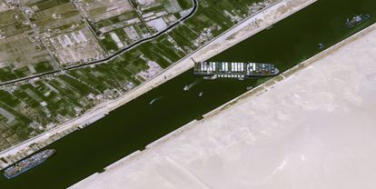

Frete caro e falta de peças: navio preso no Canal de Suez afeta sua vida... - Veja mais em https://economia.uol.com.br/noticias/redacao/2021/03/26/navio-encalhado-ever-given-canal-de-suez-efeitos-brasil.htm?cmpid=copiaecola
26/03/2021 teste@teste.com

O bloqueio do Canal de Suez, que fica no Egito, pelo navio Ever Given pode ter repercussões no Brasil, como frete mais caro, aumento no preço maior da gasolina e até atraso no fornecimento de peças vindas da Ásia para a indústria brasileira. Encalhado desde terça-feira (23), o navio impede a circulação pelo canal responsável por mais de 10% de todo o comércio internacional e cria um nó logístico mundial.... - Veja mais em https://economia.uol.com.br/noticias/redacao/2021/03/26/navio-encalhado-ever-given-canal-de-suez-efeitos-brasil.htm?cmpid=copiaecola